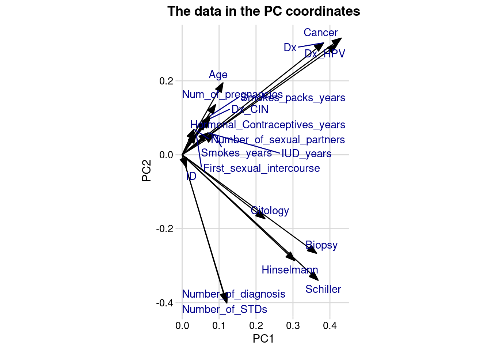

The negative patients form a dense cluster in the right corner, whereas it is more spread out to the lower-left corner for the positive ones. Patients with positive cancer diagnosis have more distinct patterns in their values compared to those with no cancer. This separation suggests that features e.g., age, smoking or STD’s might contribute strongly to distinguish cancer-positive patients.
The data in PC coordinates
pca_fit_cancer |>tidy(matrix ="rotation")
# A tibble: 361 × 3
column PC value
<chr> <dbl> <dbl>
1 ID 1 0.0110
2 ID 2 -0.0333
3 ID 3 -0.222
4 ID 4 0.235
5 ID 5 -0.167
6 ID 6 -0.0169
7 ID 7 -0.218
8 ID 8 0.353
9 ID 9 -0.213
10 ID 10 0.653
# ℹ 351 more rows
# define arrow style for plottingarrow_style <-arrow(angle =20, ends ="first", type ="closed", length = grid::unit(10, "pt"))pca_fit_cancer |>tidy(matrix ="rotation") %>%pivot_wider(names_from ="PC", names_prefix ="PC", values_from ="value") %>%ggplot(aes(PC1, PC2)) +geom_segment(xend =0, yend =0, arrow = arrow_style) +geom_text_repel(aes(label = column),color ="darkblue" ) +#xlim(-0.5, .3) + ylim(-.25, 0.5) +coord_fixed() +theme_minimal_grid(12) +ggtitle("The data in the PC coordinates") +theme(plot.title =element_text(hjust =0.5))

The arrows shows how the features contribute to the principal components analysis.
The variance explained by each PC
A general rule is to keep the components that explains up to 95% of the variance.
After PC4 and PC% the variance explained by each PC drops significantly forming an ‘elbow’. After PC10 the other components explain very little variance. These components might not be useful for analyzing or modeling.